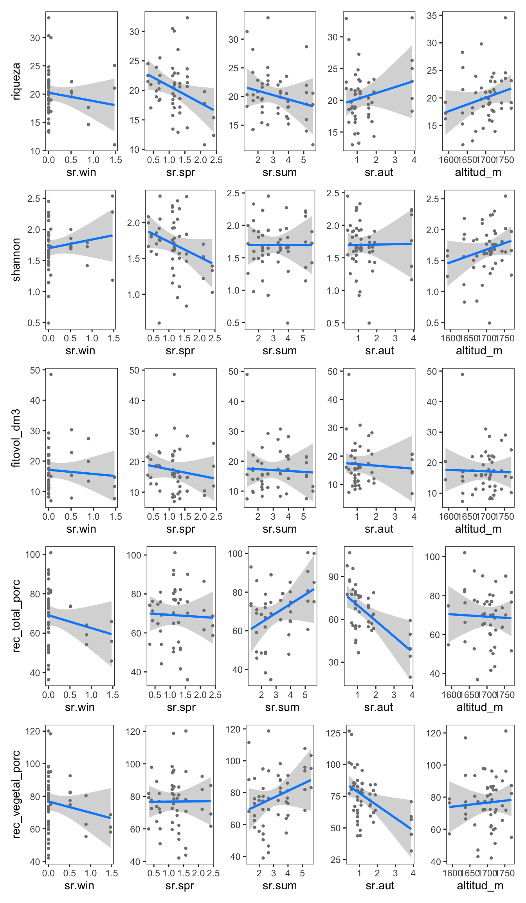
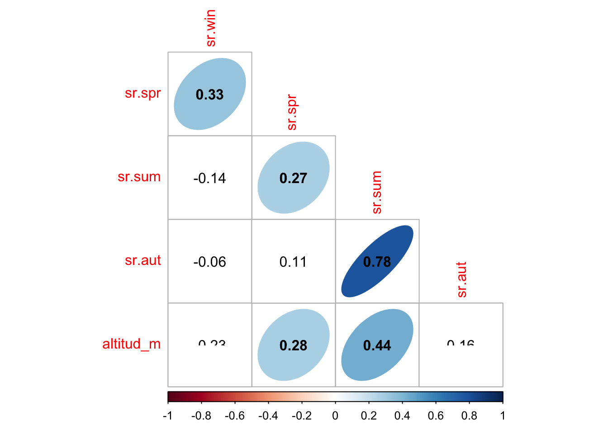
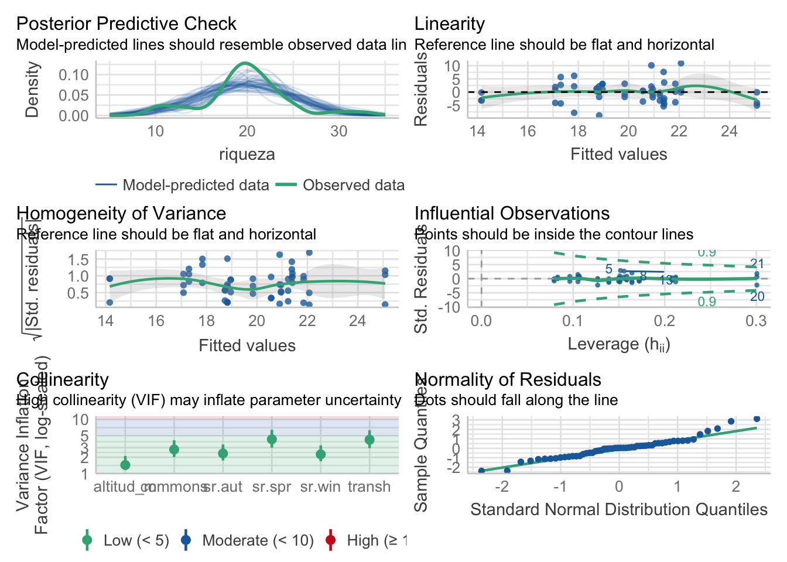
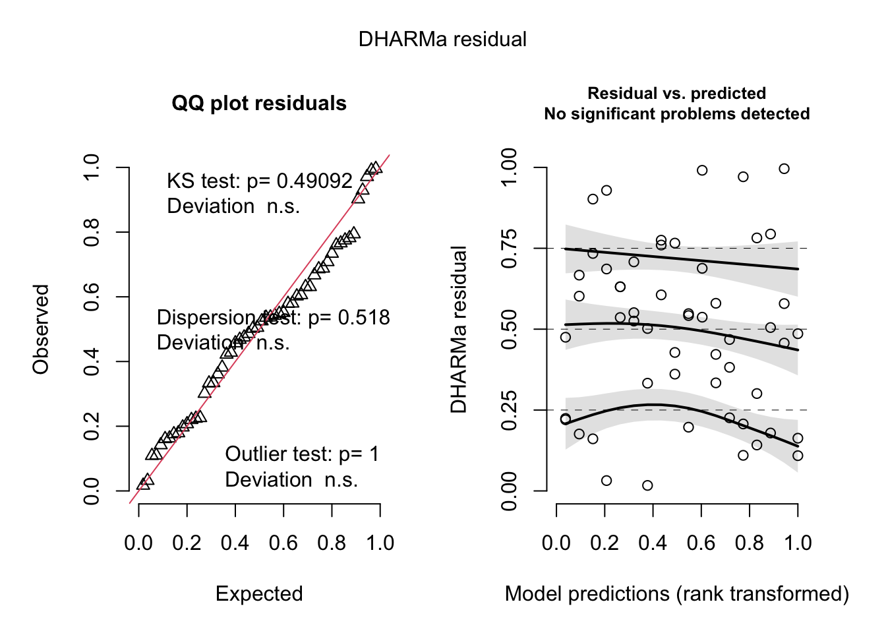
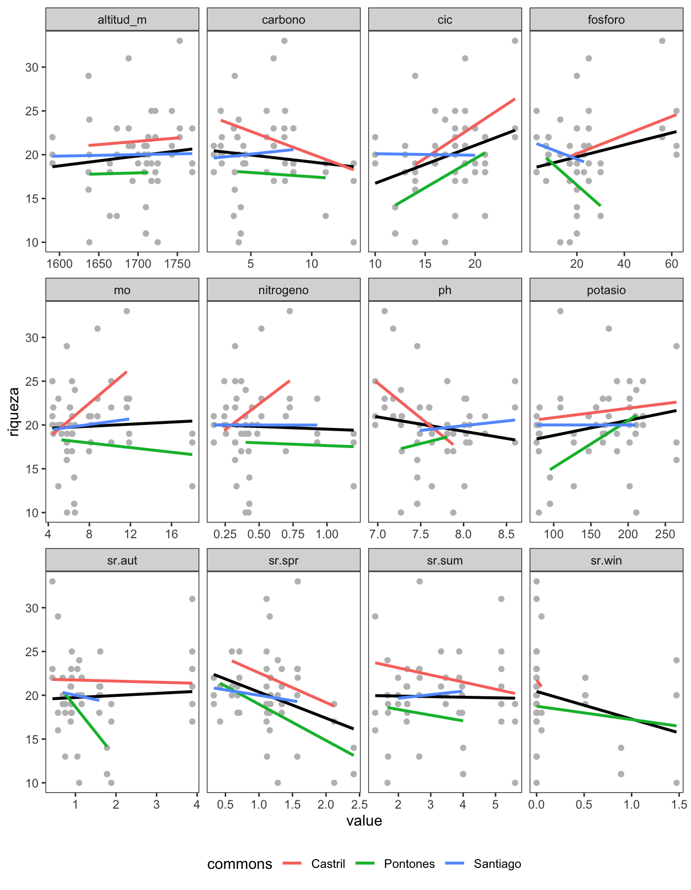
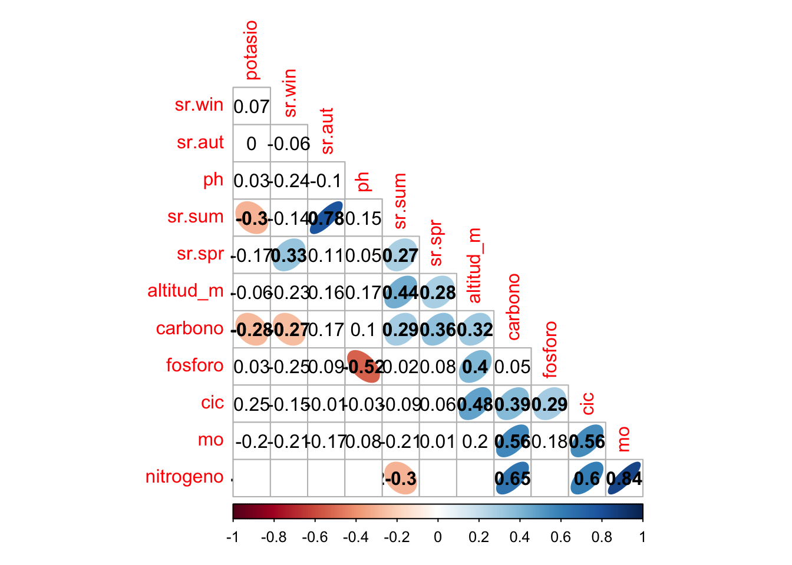
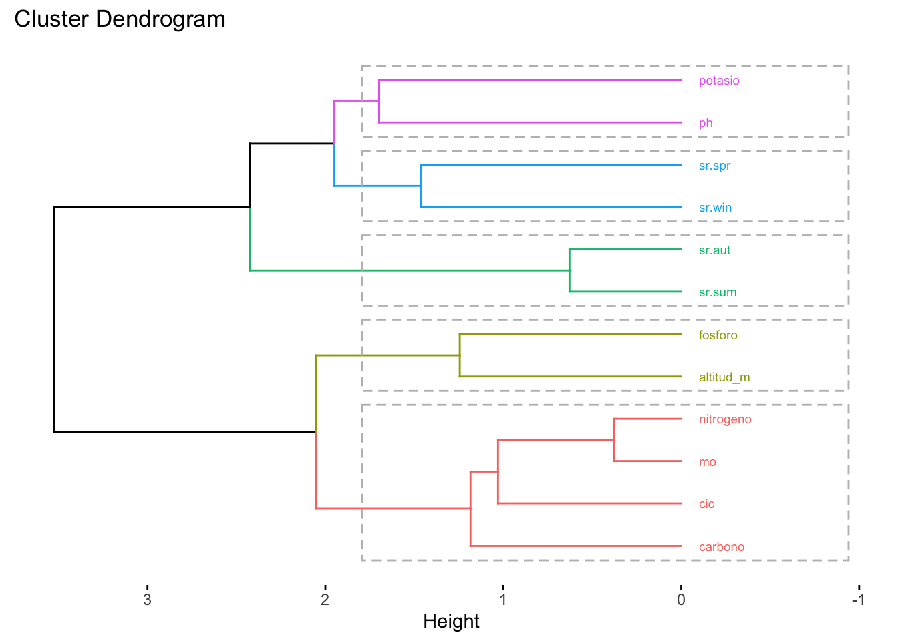
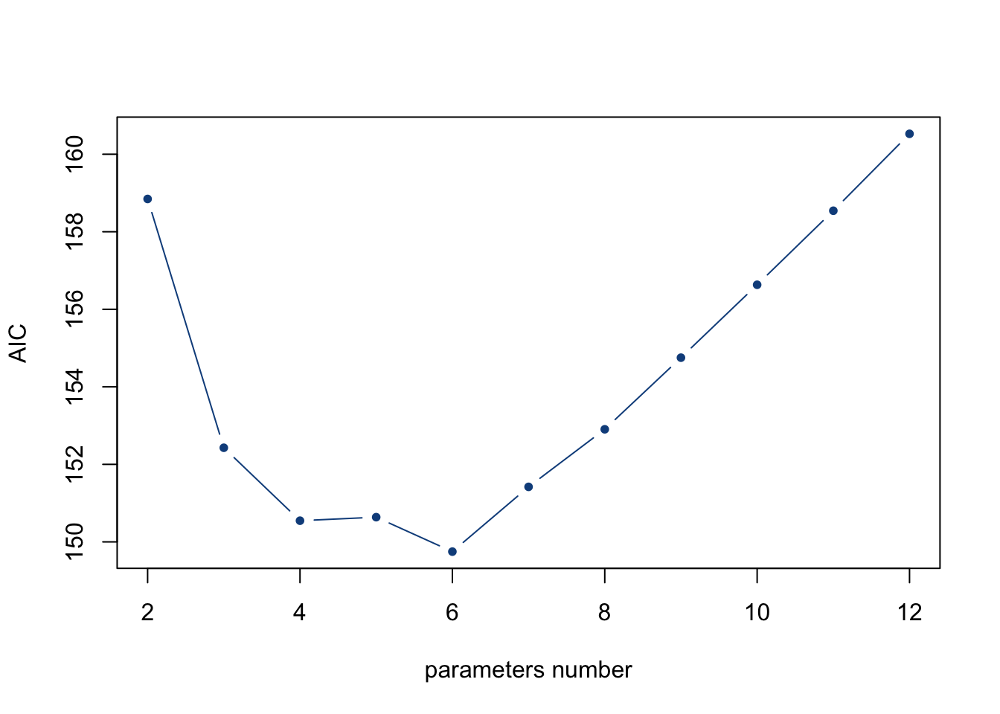

Last updated: 2022-10-07
Checks: 7 0
Knit directory:
human_ecology/
This reproducible R Markdown analysis was created with workflowr (version 1.7.0). The Checks tab describes the reproducibility checks that were applied when the results were created. The Past versions tab lists the development history.
Great! Since the R Markdown file has been committed to the Git repository, you know the exact version of the code that produced these results.
Great job! The global environment was empty. Objects defined in the global environment can affect the analysis in your R Markdown file in unknown ways. For reproduciblity it’s best to always run the code in an empty environment.
The command set.seed(20220620) was run prior to running the code in the R Markdown file.
Setting a seed ensures that any results that rely on randomness, e.g.
subsampling or permutations, are reproducible.
Great job! Recording the operating system, R version, and package versions is critical for reproducibility.
Nice! There were no cached chunks for this analysis, so you can be confident that you successfully produced the results during this run.
Great job! Using relative paths to the files within your workflowr project makes it easier to run your code on other machines.
Great! You are using Git for version control. Tracking code development and connecting the code version to the results is critical for reproducibility.
The results in this page were generated with repository version 3630e39. See the Past versions tab to see a history of the changes made to the R Markdown and HTML files.
Note that you need to be careful to ensure that all relevant files for the
analysis have been committed to Git prior to generating the results (you can
use wflow_publish or wflow_git_commit). workflowr only
checks the R Markdown file, but you know if there are other scripts or data
files that it depends on. Below is the status of the Git repository when the
results were generated:
Ignored files:
Ignored: .Rhistory
Ignored: .Rproj.user/
Note that any generated files, e.g. HTML, png, CSS, etc., are not included in this status report because it is ok for generated content to have uncommitted changes.
These are the previous versions of the repository in which changes were made
to the R Markdown (analysis/compare_commons.Rmd) and HTML (docs/compare_commons.html)
files. If you’ve configured a remote Git repository (see
?wflow_git_remote), click on the hyperlinks in the table below to
view the files as they were in that past version.
| File | Version | Author | Date | Message |
|---|---|---|---|---|
| Rmd | 3630e39 | ajpelu | 2022-10-07 | update selected variables |
| Rmd | a5e7700 | SERPAM-antonio | 2022-10-07 | update |
| html | a5e7700 | SERPAM-antonio | 2022-10-07 | update |
Aim: Explore differences between commons (higher to lower governance, i.e. PON, SAN and CAS) and/or transhumance treatment (short- and long-distance) for vegetation and soil parameters (i.e. richness, pH, …) taking into account other potentially influential variables such us elevation and seasonal stocking rates
library(tidyverse)
library(here)
library(janitor)
library(fuzzySim) # Para renombrar nombres de especies
library(vegan)
library(patchwork)
library(correlation)
library(corrplot)
library(kableExtra)
library(performance)
library(DHARMa)
library(nlme)
library(factoextra)
library(leaps)
source(here::here("code/aux_functions.R"))cleaned_data.csv. See prepare_data.Rmd for more details.d <- read_csv(here::here("data/cleaned_data.csv"), show_col_types = FALSE)We have the following structure of the data:
xtabs(~commons+transh, data = d) transh
commons long short
Castril 9 9
Pontones 9 9
Santiago 9 9First, let’s explore how the different dependent variables vary with the covariates independently of the commons and transhumance (see Zuur et al. 2010).
# Generate a vector of the dependent variable
var_interes <- d %>%
dplyr::select(riqueza, shannon, fitovol_dm3, rec_total_porc, rec_vegetal_porc) %>%
names()
# Loop for each dependent variable
for (v in var_interes) {
# Vector of covariables names
covariables <- d %>%
dplyr::select(starts_with("sr."), altitud_m) %>%
names()
# V interest name
yvar <- v
# Formula
f <- as.formula(glue::glue('{yvar} ~ {glue::glue_collapse(covariables, sep = " + ")}'))
# Adjust model
fit <- d %>% lm(formula = f)
# Loop to generate plots
for (i in covariables) {
p <- visreg::visreg(fit, data = d, i, gg = TRUE) + theme_bw() + theme(panel.grid = element_blank())
name_indivual_plot <- paste(yvar, i, sep = "_")
assign(name_indivual_plot, p)
}
# Patchwork plot (vinterest level)
# s <- purrr::map_chr(covariables, ~paste(yvar, ., sep = "_")) %>%
# glue::glue_collapse(sep = " | ")
# Patchwork plot (vinterest level) Merge y-axis
saux <- purrr::map_chr(covariables, ~paste(yvar, ., sep = "_"))
s <- paste0(saux[1], " | ",
purrr::map_chr(saux[-1], ~paste0(., " + labs(y=NULL)")) %>%
glue::glue_collapse(sep = " | "))
# Evaluate
p_vinteres <- eval(rlang::parse_expr(s))
assign(paste0("plot_",yvar), p_vinteres)
} all_plots_code <- purrr::map_chr(var_interes, ~paste0("plot_", .)) %>%
glue::glue_collapse(sep = " / ")
eval(rlang::parse_expr(all_plots_code))
| Version | Author | Date |
|---|---|---|
| a5e7700 | SERPAM-antonio | 2022-10-07 |
A first concern is about the potential correlation of the seasonal stocking rates. So we evaluate the Variance Inflation factors (VIF) (see Zuur et al. 2009).
myvars <- d %>% dplyr::select(starts_with("sr."), altitud_m, commons, transh) %>% names()
vif_table <- corvif(d[,myvars]) vif_table %>% kbl(
caption = "VIF Table"
) %>%
kable_paper("hover", full_width = FALSE)| GVIF | Df | GVIF^(1/2Df) | |
|---|---|---|---|
| sr.win | 2.368726 | 1 | 1.539067 |
| sr.spr | 12.133427 | 1 | 3.483307 |
| sr.sum | 10.550275 | 1 | 3.248119 |
| sr.aut | 3.523894 | 1 | 1.877204 |
| altitud_m | 1.530023 | 1 | 1.236941 |
| commons | 3.234072 | 2 | 1.341027 |
| transh | 11.750448 | 1 | 3.427893 |
Higher VIF values indicate higher collinearity among variables. Several cut-off values have been proposed in the literature: 3, 5 or 10 (see Zuur et al. 2013 for a revision). Our results shown (Table 1) several variables with high VIF values. So, previously to decide what variable discard to avoid collinearity, let’s explore about the correlation between seasonal stocking rates.
co <- correlation((d %>% dplyr::select(starts_with("sr."), altitud_m))) %>% as.data.frame()
co_test <- cor.mtest((d %>% dplyr::select(starts_with("sr."), altitud_m)),
conf.level = .95)
corrplot(corr = cor((d %>% dplyr::select(starts_with("sr."), altitud_m))),
p.mat = co_test$p,
method = 'ellipse',
type = 'lower',
insig = 'blank',
diag = FALSE,
addCoef.col = 'black',
order = 'AOE')$corrPos -> p1
text(p1$x, p1$y, round(p1$corr, 2))
| Version | Author | Date |
|---|---|---|
| a5e7700 | SERPAM-antonio | 2022-10-07 |
sr.sum (i.e. summer stocking rate) is strongly and significantly correlated with sr.aut and more weekly correlated with altitud_m. In addition, sr.sum shown a high VIF-value (10.5502752, see Table 1).
myvars2 <- myvars[-match("sr.sum", myvars)]
vif_table2 <- corvif(d[,myvars2])
Variance inflation factors
GVIF Df GVIF^(1/2Df)
sr.win 2.261726 1 1.503904
sr.spr 4.300100 1 2.073668
sr.aut 2.350798 1 1.533231
altitud_m 1.436965 1 1.198735
commons 2.782637 2 1.291559
transh 4.208523 1 2.051468Now, all VIF values are below 5.
We want to evaluate differences between commons and/or transhumance for the variables of interest (\(y\), i.e. richness) considering also others variables (seasonal stocking rates, elevation. The general form of the model will be \[Y_{ij} = \alpha + \beta_1 \cdot elevation_{i} + \beta_2 \cdot sr.win_i + \beta_3 \cdot sr.spr_i + \\ \beta_4 \cdot sr.aut_i + \beta_5 \cdot transh_i + \beta_5\cdot commons + \epsilon_i\]
Our first approach will be a GLM/LM depend on the error structure.
Mixed model?
Considering the answers to that questions, we should decided to include a factor as fixed or random. transh variable is considered as fixed factor. Several authors (e.g. Zuur et al. 2007) stated that factor with small numbers of levels (there is a ‘rule’ of < 5 levels) must be considered as fixed to avoid problems (Zuur et al. 2007) but see Oberpriller et al. (2022).
quadrat) and the area (cod_parcela) should be considered as random part since we have a nested design: + (1|area/plot)full_covariates <- glue::glue_collapse(myvars2, sep = "+")
yvar <- "riqueza"
f <- reformulate(full_covariates, response = yvar)
# formula for lmer4
random_part <- "(1 | parcela/quadrat)"
covariates_lmer <- glue::glue_collapse(c(myvars2, random_part), sep = " + ")
f_lmer <- reformulate(covariates_lmer, response = yvar)
m <- lm(f, data = d)Explore the model
check_model(m)
| Version | Author | Date |
|---|---|---|
| a5e7700 | SERPAM-antonio | 2022-10-07 |
simulated_resid <- DHARMa::simulateResiduals(m, n = 1000)
plot(simulated_resid)
| Version | Author | Date |
|---|---|---|
| a5e7700 | SERPAM-antonio | 2022-10-07 |
There are no problems at first glance, but the richness data would fit better with Poisson distribution
m_gls <- gls(f, data = d, method = 'REML')m_lme <- lme(f, random = ~ 1 | parcela/quadrat, method = 'REML', data = d)anova(m_gls, m_lme) Model df AIC BIC logLik Test L.Ratio p-value
m_gls 1 9 308.0154 324.4732 -145.0077
m_lme 2 11 311.5793 331.6944 -144.7897 1 vs 2 0.436067 0.8041The likelihood ratio test indicates that the mixed model is not considerably better. Anyway for design we include parcela / quadrat as random part.
# E <- resid(m_lme, type="normalized")
# FI <- fitted(m_lme)
#
# boxplot(E ~ commons, data = d)
# boxplot(E ~ transh, data = d)
# plot(y=E, x=d$sr.win)
# plot(y=E, x=d$sr.aut)
# plot(y=E, x=d$sr.spr)
# plot(y=E, x=d$altitud_m)If we want to explore how the different covariates (i.e. sr.spr, estiercol, pH, etc) affect to plant richness independently of the commons, we would explore how is the average response of richness to the covariate of interest (e.g. pH), and then see how that relationship varies for each of the commons. In addition, if we don’t consider the commons in the model (as proposed in RQ2) we could omit potential interaction between the commons and the covariate.
For instance, look at the following plot:
covs <- c("sr.win", "sr.spr", "sr.sum","sr.aut","altitud_m","cic","fosforo","mo","ph", "potasio","nitrogeno","carbono")
d %>% dplyr::select(one_of(covs), riqueza, commons) %>%
pivot_longer(-c(riqueza, commons)) %>%
ggplot(aes(x = value, y = riqueza)) +
geom_point(colour = "gray") +
geom_smooth(method = "lm", se = FALSE, colour = "black") +
geom_smooth(aes(group = commons, colour = commons), method = "lm", se = FALSE) +
theme_bw() +
theme(panel.grid = element_blank(),
legend.position = "bottom") +
facet_wrap(~name, scales = "free_x") 
| Version | Author | Date |
|---|---|---|
| a5e7700 | SERPAM-antonio | 2022-10-07 |
So, I would propose to the following approach:
To perform a potential covariates selection based on: a) our scientific interest, but b) also consider to applied any reduction techniques (clustering, PCA, etc.). for instance, the covariates commons and transh must be included (they are part of the research questions that we want to know).
Then, to init the modelization process with those potential variables, and then to perform the model’s selection with the better covariates (most parsimonious model).
co_all <- correlation((d %>% dplyr::select(one_of(covs)))) %>% as.data.frame()
co_test <- cor.mtest((d %>% dplyr::select(one_of(covs))),
conf.level = .95)
corrplot(corr = cor((d %>% dplyr::select(one_of(covs)))),
p.mat = co_test$p,
method = 'ellipse',
type = 'lower',
insig = 'blank',
diag = FALSE,
addCoef.col = 'black',
order = 'AOE')$corrPos -> p1
text(p1$x, p1$y, round(p1$corr, 2))
| Version | Author | Date |
|---|---|---|
| a5e7700 | SERPAM-antonio | 2022-10-07 |
aux_d <- d |> dplyr::select(one_of(covs))
covariates_corr <- cor(aux_d)
dfdis <- dist(covariates_corr, method = "euclidean")
h <- hcut(dfdis, k = 5, isdiss = TRUE)
h |>
fviz_dend(., rect = TRUE, horiz = TRUE, lwd = 0.5, cex = .5)
| Version | Author | Date |
|---|---|---|
| a5e7700 | SERPAM-antonio | 2022-10-07 |
Based on the results, we performed a variable selection using an exhaustive search, i.e. checking every possible models of a maximum subsets of 12 variables. For each subset the algorithm select the best predictors. Then for a subset of 2 variables, the algorithm select the best model of two variables.
d_vs <- d |>
dplyr::select(
riqueza,
one_of(covs)
)
all_models <- summary(
regsubsets(riqueza ~ ., data = d_vs, nvmax = 20,
force.in = "sr.aut"))
all_models$which |>
as.data.frame() |>
mutate(across(.fns = ~replace(., . == "TRUE", "+"))) |>
mutate(across(.fns = ~replace(., . == "FALSE", ""))) |>
t() |>
kbl() |> kable_styling()| 2 | 3 | 4 | 5 | 6 | 7 | 8 | 9 | 10 | 11 | 12 | |
|---|---|---|---|---|---|---|---|---|---|---|---|
| (Intercept) |
|
|
|
|
|
|
|
|
|
|
|
| sr.aut |
|
|
|
|
|
|
|
|
|
|
|
| sr.win |
|
|
|
|
|
|
|
||||
| sr.spr |
|
|
|
|
|
|
|
|
|
|
|
| sr.sum |
|
||||||||||
| altitud_m |
|
|
|
||||||||
| cic |
|
|
|
|
|
|
|
|
|
|
|
| fosforo |
|
|
|
|
|
||||||
| mo |
|
|
|
|
|
|
|||||
| ph |
|
|
|
|
|
|
|
|
|||
| potasio |
|
|
|||||||||
| nitrogeno |
|
|
|
|
|
|
|
|
|
||
| carbono |
|
|
|
|
Which is the best subset? 1. Using an \(R^2\) approach, the best subset of parameters is 5, and using an AIC criteria, the best subset of parameters is 5.
plot(mod_aic ~ I(2:(p - 1)), ylab = "AIC", xlab = "parameters number",
pch = 20, col = "dodgerblue4", type = "b")
| Version | Author | Date |
|---|---|---|
| a5e7700 | SERPAM-antonio | 2022-10-07 |
Using this information and expert knowledge, we will select the followings variables:
d |> dplyr::select(one_of(selected_vars)) |> names()[1] "sr.spr" "sr.aut" "cic" "fosforo" "ph" "potasio"
[7] "nitrogeno"
sessionInfo()R version 4.2.1 (2022-06-23)
Platform: aarch64-apple-darwin20 (64-bit)
Running under: macOS Monterey 12.3.1
Matrix products: default
BLAS: /Library/Frameworks/R.framework/Versions/4.2-arm64/Resources/lib/libRblas.0.dylib
LAPACK: /Library/Frameworks/R.framework/Versions/4.2-arm64/Resources/lib/libRlapack.dylib
locale:
[1] en_US.UTF-8/en_US.UTF-8/en_US.UTF-8/C/en_US.UTF-8/en_US.UTF-8
attached base packages:
[1] stats graphics grDevices utils datasets methods base
other attached packages:
[1] leaps_3.1 factoextra_1.0.7 nlme_3.1-157 DHARMa_0.4.6
[5] performance_0.10.0 kableExtra_1.3.4 corrplot_0.92 correlation_0.8.2
[9] patchwork_1.1.2 vegan_2.6-2 lattice_0.20-45 permute_0.9-7
[13] fuzzySim_4.3 janitor_2.1.0 here_1.0.1 forcats_0.5.2
[17] stringr_1.4.1 dplyr_1.0.10 purrr_0.3.4 readr_2.1.2
[21] tidyr_1.2.1 tibble_3.1.8 ggplot2_3.3.6 tidyverse_1.3.2
[25] rmdformats_1.0.4 knitr_1.40 workflowr_1.7.0
loaded via a namespace (and not attached):
[1] readxl_1.4.1 backports_1.4.1 systemfonts_1.0.4
[4] plyr_1.8.7 modEvA_3.5 splines_4.2.1
[7] gap.datasets_0.0.5 digest_0.6.29 foreach_1.5.2
[10] htmltools_0.5.3 viridis_0.6.2 fansi_1.0.3
[13] magrittr_2.0.3 googlesheets4_1.0.1 cluster_2.1.3
[16] doParallel_1.0.17 tzdb_0.3.0 see_0.7.3
[19] modelr_0.1.9 vroom_1.5.7 svglite_2.1.0
[22] colorspace_2.0-3 rvest_1.0.3 ggrepel_0.9.1
[25] haven_2.5.1 xfun_0.33 callr_3.7.2
[28] crayon_1.5.1 jsonlite_1.8.2 lme4_1.1-30
[31] iterators_1.0.14 glue_1.6.2 gtable_0.3.1
[34] gargle_1.2.1 webshot_0.5.4 car_3.1-0
[37] abind_1.4-5 scales_1.2.1 DBI_1.1.3
[40] rstatix_0.7.0 Rcpp_1.0.9 viridisLite_0.4.1
[43] xtable_1.8-4 bit_4.0.4 datawizard_0.6.2
[46] httr_1.4.4 ellipsis_0.3.2 pkgconfig_2.0.3
[49] farver_2.1.1 qgam_1.3.4 sass_0.4.2
[52] dbplyr_2.2.1 utf8_1.2.2 tidyselect_1.1.2
[55] labeling_0.4.2 rlang_1.0.6 later_1.3.0
[58] munsell_0.5.0 cellranger_1.1.0 tools_4.2.1
[61] cachem_1.0.6 cli_3.4.1 generics_0.1.3
[64] broom_1.0.1 evaluate_0.16 fastmap_1.1.0
[67] yaml_2.3.5 processx_3.7.0 bit64_4.0.5
[70] fs_1.5.2 dendextend_1.16.0 whisker_0.4
[73] mime_0.12 xml2_1.3.3 gap_1.2.3-6
[76] compiler_4.2.1 rstudioapi_0.14 ggsignif_0.6.3
[79] reprex_2.0.2 bslib_0.4.0 stringi_1.7.8
[82] highr_0.9 ps_1.7.1 Matrix_1.5-1
[85] visreg_2.7.0 nloptr_2.0.3 vctrs_0.4.2
[88] pillar_1.8.1 lifecycle_1.0.2 jquerylib_0.1.4
[91] insight_0.18.4 httpuv_1.6.6 R6_2.5.1
[94] bookdown_0.29 promises_1.2.0.1 gridExtra_2.3
[97] codetools_0.2-18 boot_1.3-28 MASS_7.3-57
[100] assertthat_0.2.1 rprojroot_2.0.3 withr_2.5.0
[103] mgcv_1.8-40 bayestestR_0.13.0 parallel_4.2.1
[106] hms_1.1.2 terra_1.6-17 grid_4.2.1
[109] minqa_1.2.4 rmarkdown_2.16 snakecase_0.11.0
[112] carData_3.0-5 googledrive_2.0.0 ggpubr_0.4.0
[115] git2r_0.30.1 getPass_0.2-2 shiny_1.7.2
[118] lubridate_1.8.0 For more info see Dalpiaz (2022)↩︎